Kanjonitrekit vedessä, 16 kilometrin laskeutuminen aavikolle, Petra takaovesta, kamelit auringonlaskuun ja yö tähtitaivaan alla ilman telttaa. Vuokra-auto, omat aikataulut, nolla bussilasteja.
Amman in & outn. 1 000–1 150 € / hlö maassa55 % seikkailua45 % chilliäParas kausi: loka
⚠️ Lue tämä ennen kuin varaat lennot
Heinä–elokuussa Wadi Rum ja Aqaba ovat 40–45 °C. Trekkaaminen on silloin käytännössä mahdotonta ja koko tämän suunnitelman idea kaatuu.
Paras ikkuna on loka–marraskuu tai maalis–toukokuu. Erityisesti lokakuu osuu nappiin: Wadi Mujibin vesireitit ovat auki noin 31.10. asti, päivät ovat 25–30 °C ja yöt aavikolla siedettävät. Koko sivu on kirjoitettu lokakuun oletuksella.
Lennot Ammaniin ja Ammanista — halvin ja eniten vuoroja. Auto noudetaan ja palautetaan Ammaniin, viimeinen siirtymä Aqabasta lennetään (45 min) tai ajetaan Desert Highwaytä (4 h).
YÖ 1
Amman
saapuminen
YÖ 2
Kuollutmeri
1 h ajoa
YÖ 3
Feynan
2,5 h + trekki
YÖ 4
Petra
1,5 h ajoa
YÖ 5–6
Wadi Rum
1,5 h ajoa
YÖ 7
Aqaba
1 h ajoa
Päivä päivältä
Ohjelma
PÄIVÄ 1
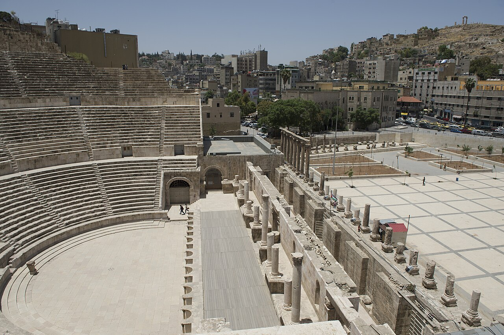
Roomalainen teatteri keskellä Ammanin downtownia — kaikki illan syömäpaikat ovat kävelymatkan päässä.
KulttuuriChill
Amman: laskeudutaan syömällä
Ei nähtävyyksien pakkopullaa. Downtownin syömäkierros: Hashem (falafel kujalla, jonossa taksikuskit ja kuninkaalliset), Habibah kunafa jälkiruoaksi, sitten shisha kattoterassilla Rainbow Streetillä.
Illan päätteeksi vanha hammam — höyryä, kylmä allas ja hieronta. Yllättävän hyvä avaus poikaporukalle ja tekee ihmeitä lentopäivän jälkeen.
Osta duty free lentokentältä saapuessa. Se on käytännössä viimeinen kunnon viinakauppa ennen Aqabaa — Feynan on alkoholiton ja aavikolla myydään teetä.
Yö: Amman, downtownAjoa: lentokentältä 40 min
PÄIVÄ 2
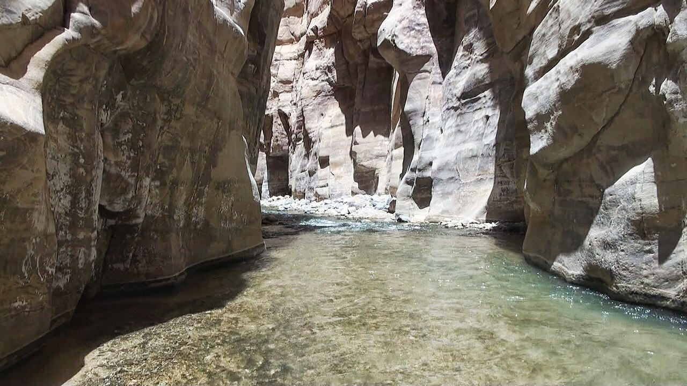
Wadi Mujibin kanjoni. Reitti kulkee ylöspäin joessa — ei joen vartta pitkin.
SeikkailuChill
Wadi Mujib aamulla, Kuollutmeri iltapäivällä
Ylös 6:30 ja aja 1,5 h Mujibiin. Ole portilla kun se avaa: Siq Trail on omatoiminen — ei opasta, ei varauksia. Kahlaat ja kiipeät ylöspäin kanjonijoessa, köysien ja tikkaiden avulla vesiputousten ohi. Kesto 2–3 h, pääsymaksu n. 21 JOD (ei kuulu Jordan Passiin). Kelluntaliivi ja kypärä tulevat portilta. Kaikki kastuu — jätä puhelin autoon tai osta vesitiivis pussi.
Iltapäivällä alas maailman alimpaan paikkaan: kellunta ja mutakylvyt Kuolleellamerellä. Sen jälkeen Ma'inin kuumat lähteet tien varrella — kiehuva vesiputous, jonka alla seistään kuin luonnon suihkussa.
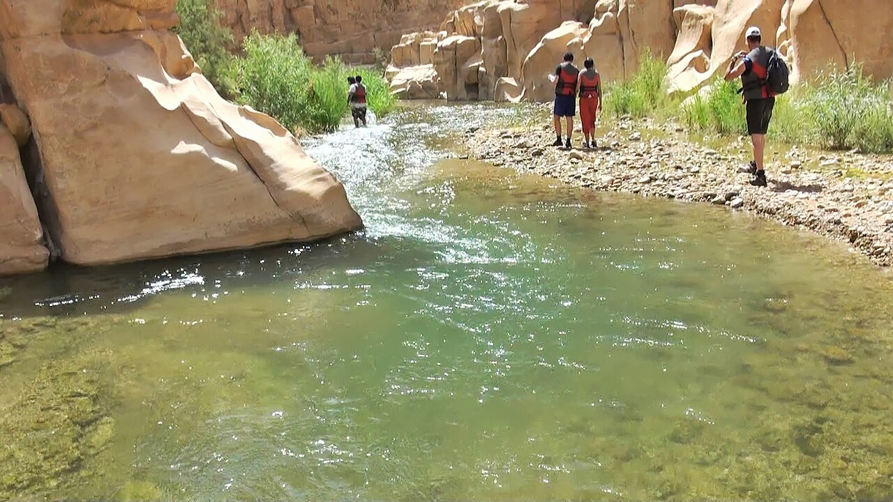
Suurin osa reitistä on kahlaamista — uintia vain paikoin.
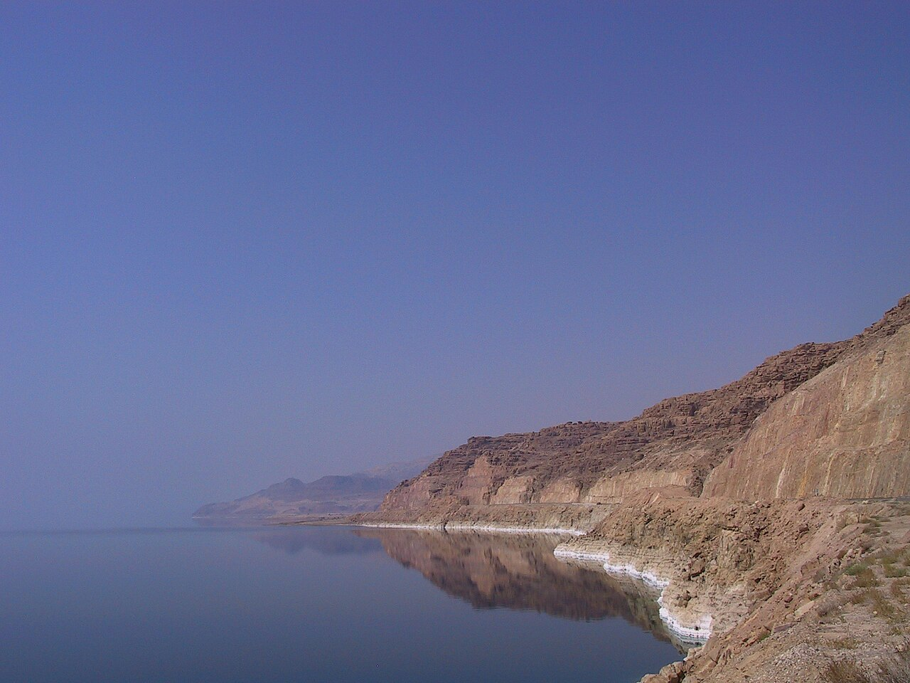
Kuolleenmeren Jordanian puoleinen ranta.
Yö: Mujib Chalets, mökit suoraan rannallaAjoa: n. 2 h yhteensäHuom: vesireitit auki 1.4.–31.10.
PÄIVÄ 3
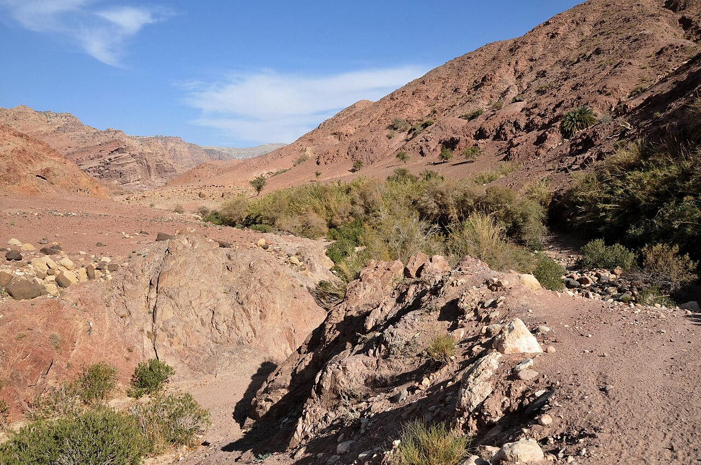
Dana–Feynan-reitti laskeutuu vuoristokylästä aavikolle — Jordan Trailin hienoimpia osuuksia.
SeikkailuChill
Trekki: Dana → Feynan, 16 km alamäkeä
Aamulla King's Highway etelään. Jätä auto Dana Guest Houselle ja lähde jalkaisin: reitti laskeutuu n. 16 km ja 1 200 metriä biosfäärialueen läpi Danan kivikylästä aavikon reunalle. Polku on selvä, joten pärjää ilman opasta — mutta beduiiniopas kannattaa jos haluat tietää mitä kaikkea kasvien kanssa voi tehdä.
Perillä Feynan Ecolodge: ei sähköä huoneissa, satoja kynttilöitä, katolla kaukoputki ja tähtiä esittelevä paikallinen, kupariajan kaivoskäytävät kävelymatkan päässä. Illallinen on kasvisruokaa, alkoholia ei ole eikä sitä saa tuoda. Tämä on reissun ainutlaatuisin yö — varaa 2–3 kk etuajassa.
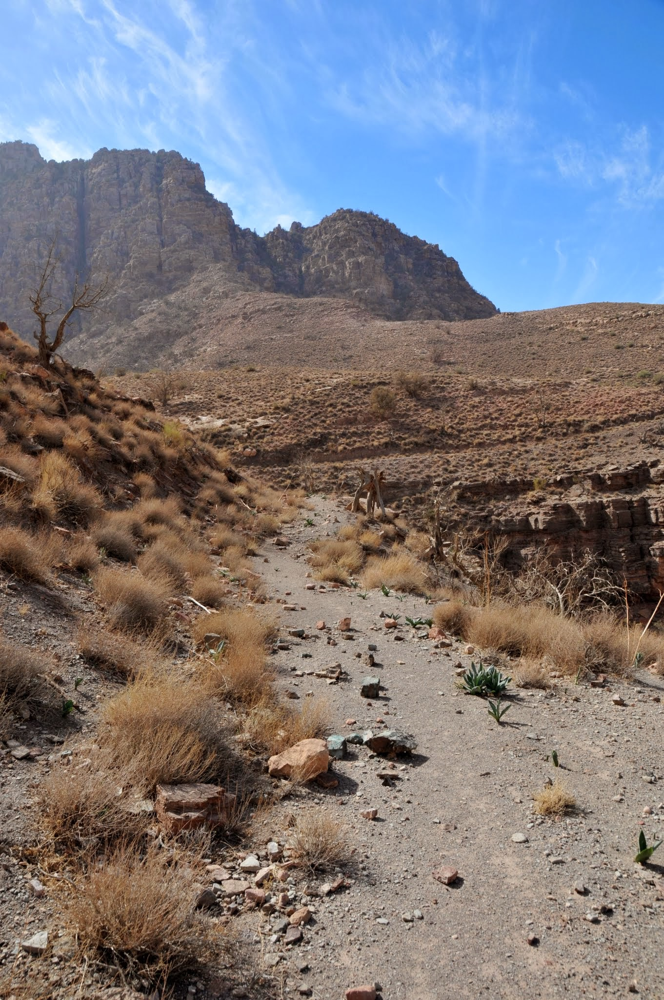
Polkua ei ole rakennettu — se on kuljettu.
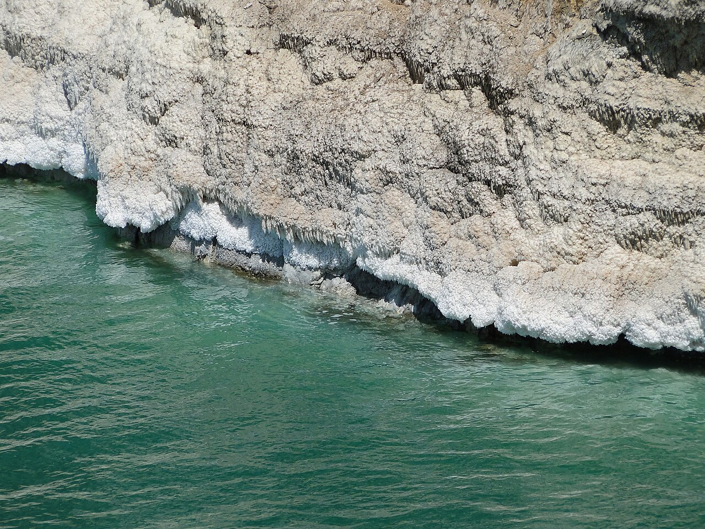
Aamun lähtöpaikka: suolakerrostumat rannassa.
Yö: Feynan EcolodgeAjoa: 2,5 h + trekki 5–6 hAuto: jää Danaan, haetaan seuraavana aamuna
PÄIVÄ 4
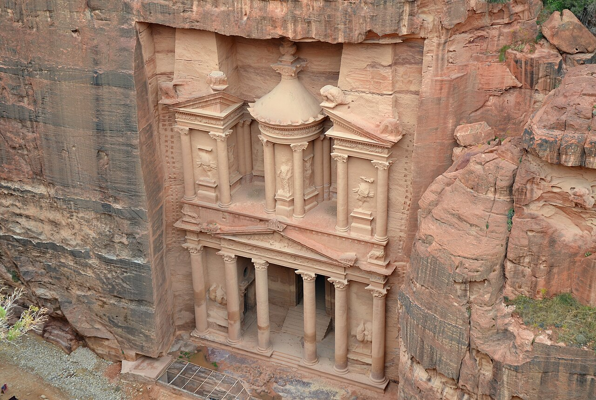
Al-Khubthan kielekkeeltä katsot Aarrekammiota ylhäältä — ilman väkijoukkoa alhaalla.
KulttuuriSeikkailu
Petra ylhäältä, ja kynttilät Siqissä
4×4-shuttle ulos Feynanista, auto haetaan Danasta ja ajetaan Petraan. Iltapäivällä Al-Khubtha trail: jyrkkä porrasnousu Aarrekammion yläpuoliselle kielekkeelle, jossa beduiini myy teetä ja alla oleva turistivirta näyttää muurahaisilta. Paras yksittäinen näkymä Petrassa, ja 90 % kävijöistä ei koskaan nouse sinne.
Illalla Petra by Night — Siq valaistaan 1 500 kynttilällä. Järjestetään yleensä ma / ke / to noin 20:30; tarkista päivät paikan päällä, ne muuttuvat.
Yö: Wadi Musa (Petran kylä)Ajoa: 1,5 hLiput: Jordan Pass kattaa Petran
PÄIVÄ 5
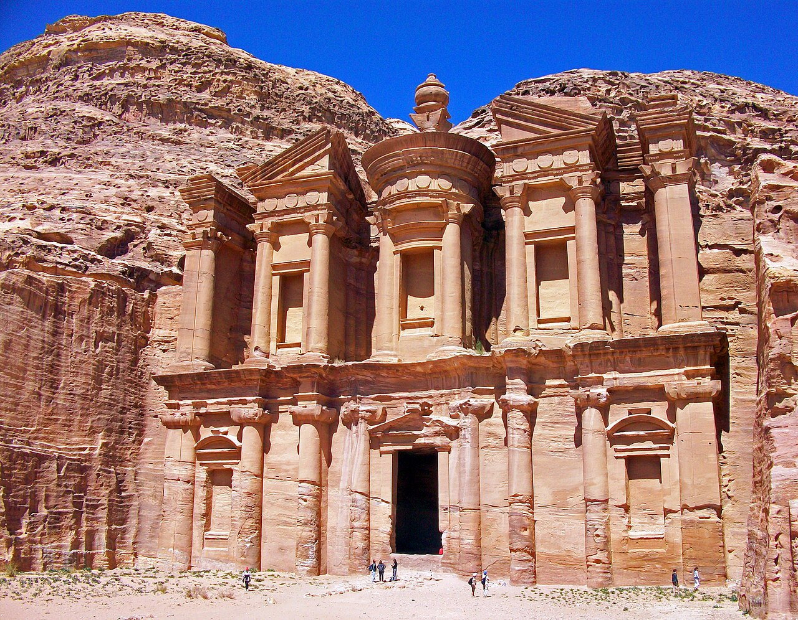
Ad-Deir, Luostari. Takaovireitiltä tulet tänne ylhäältä — et alhaalta portaita pitkin.
SeikkailuKulttuuri
Petran takaovi — koko päivä omin jaloin
Tämä on päivä, jota muistellaan. Aja Little Petraan ja lähde beduiinireitille vuorten yli. Reitti nousee kallioportaita, kiertää selänteitä ja pudottaa sinut Ad-Deirille takaapäin — ei portteja, ei lipuntarkastusta, ei bussilasteja. Sen jälkeen laskeudut koko Petran läpi: Luostari, keskuskaupunki, kuninkaanhaudat, Aarrekammio, ja ulos Siqin kautta.
Yhteensä 12–14 km. Opas kannattaa (n. 30–50 JOD / porukka) — reitti haarautuu eikä ole viitoitettu, ja se on osa hupia. Iltapäivällä aja Wadi Rumiin, ilmoittaudu kyläportilla ja beduiini vie sinut leiriin. Illallinen on zarb: lammas ja juurekset kaivetaan hiekkaan kuumien kivien kanssa.
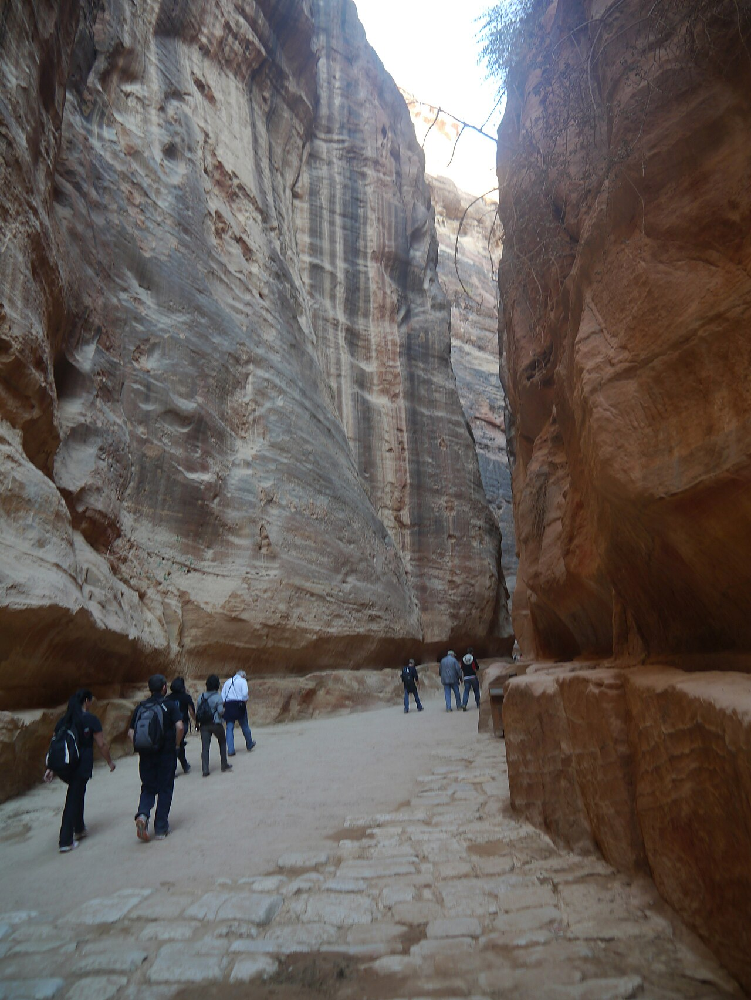
Siq — kulje se ulospäin, vastavirtaan.
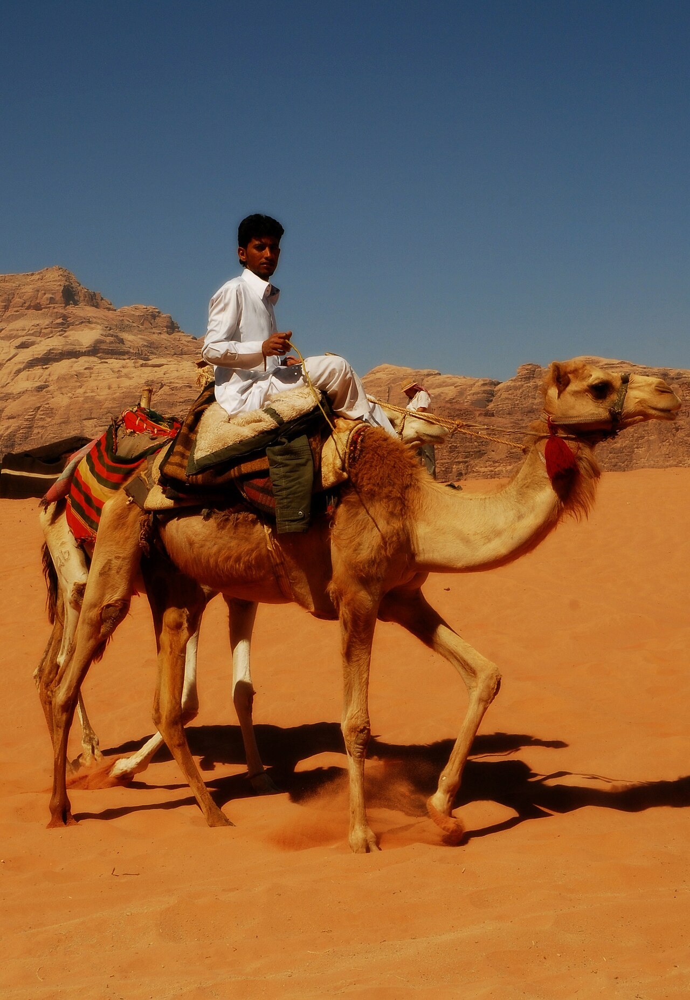
Wadi Rum ottaa vastaan.
Yö: beduiinileiri, Wadi RumAjoa: 1,5 h illallaKesto: pitkä päivä — aloita aikaisin
PÄIVÄ 6
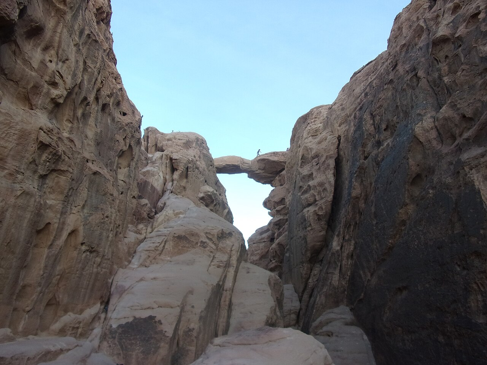
Burdahin kivisilta. Ylös mennään kädet ja jalat käyttäen, beduiini edellä.
SeikkailuChill
Kivisillat, dyynit, kamelit — ja yö ilman telttaa
Aamu:Jebel Burdahin kivisilta. Beduiiniopastettu kalliokiipeily kapeaa kuilua ylös luonnon kivisillalle. Ei köysiä, ei kiipeilykokemusvaatimusta — mutta jännittää juuri sopivasti ja huipulla kävellään sillan yli.
Halutessa:Jebel Um Adaami, Jordanian korkein huippu (1 854 m). Huipulta näkyy Saudi-Arabian rajakivi ja aavikko molempiin suuntiin.
Iltapäivä: punaiset dyynit, sandboarding jeepin katolta haetulla laudalla, ja jos porukassa on ratsastustaitoa: arabialaisilla hevosilla laukkaa avoimella hiekalla Disin suunnalla. Se päihittää kamelin täysin — kameli on hitaampi ja hauskempi, hevonen on nopea ja vakava.
Auringonlasku:kamelikaravaani leiripaikalle. Yö wild campissa: patjat suoraan hiekalle, ei telttaa, beduiini tekee tulen ja teetä. Kun tuli sammuu, Linnunrata on suoraan yläpuolella. Ota omat juomat mukaan.
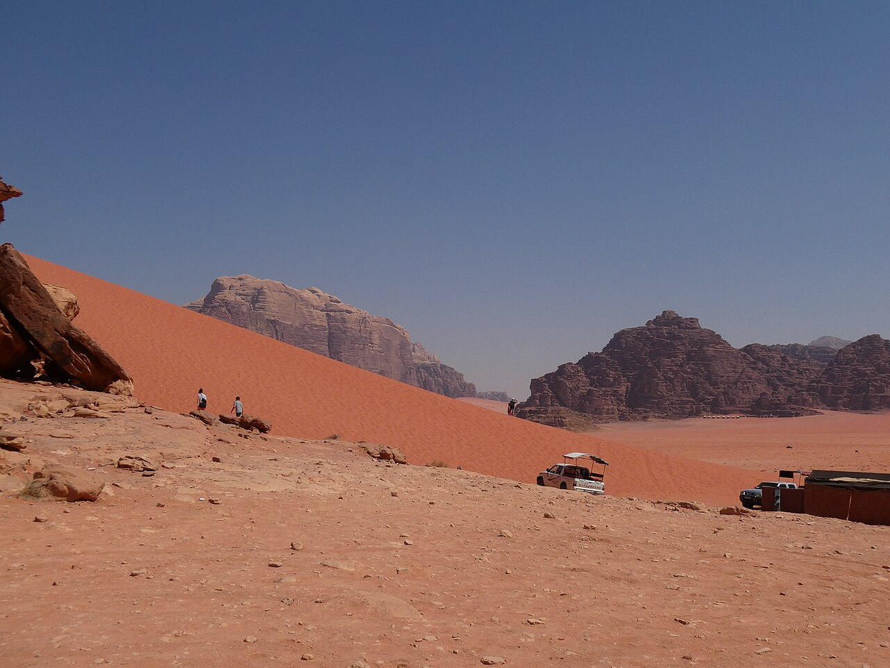
Punainen dyyni — ylös kävellen, alas miten sattuu.
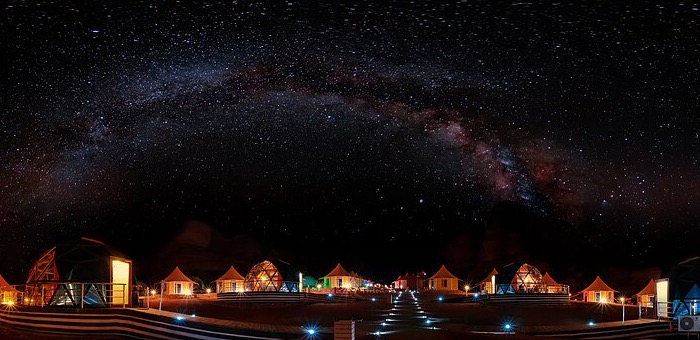
Wadi Rumin yötaivas. Wild campissa ei ole näitäkään valoja.
Yö: wild camp aavikollaAjoa: ei omaa autoa — beduiini ajaaOta: otsalamppu, lämmin takki
PÄIVÄ 7–8
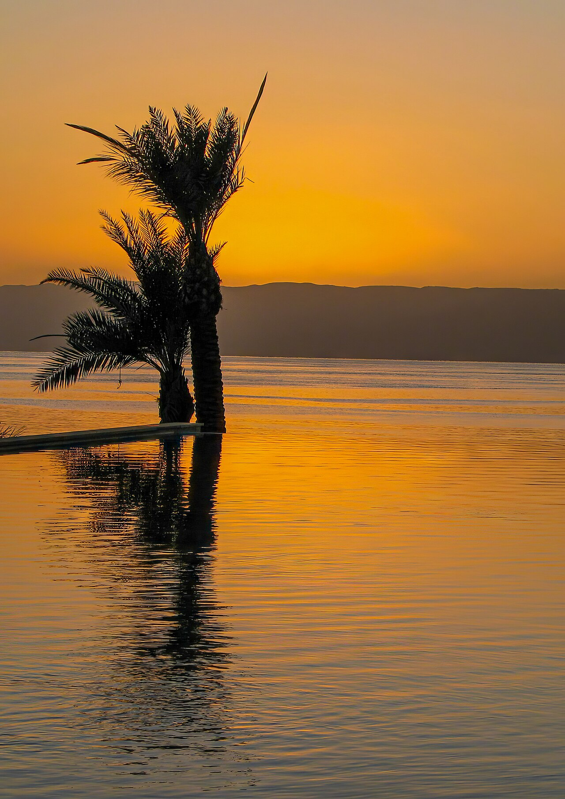
Aqaba, Punainenmeri. Reissun viimeinen vaihde.
ChillSeikkailu
Punainenmeri: alas pinnan alle, sitten ei mitään
Tunnin ajo aavikolta merelle. Kaksi sukellusta: vedenalainen sotamuseo — vuonna 2019 pohjaan lasketut panssarivaunut, rynnäkköpanssarit ja helikopteri hiekalla 15–28 metrissä — ja Cedar Pride, kyljellään makaava rahtilaivan hylky vuodelta 1985. Ei-sukeltajat näkevät osan pinnalta snorklaten tai vuokraavat veneen, jossa kapteeni grillaa kalaa kannella.
Iltapäivä rannalla, ilta kalaravintolassa. Aqaba on Jordanian rennoin kaupunki ja siellä on oikeita baareja.
Päivä 8: aamusnorklaus, sitten Aqabasta Ammaniin (lento 45 min, tai Desert Highway 4 h) ja kotiin. Suoria paluulentoja Aqabasta Eurooppaan on harvassa — laske Amman-yhteys.
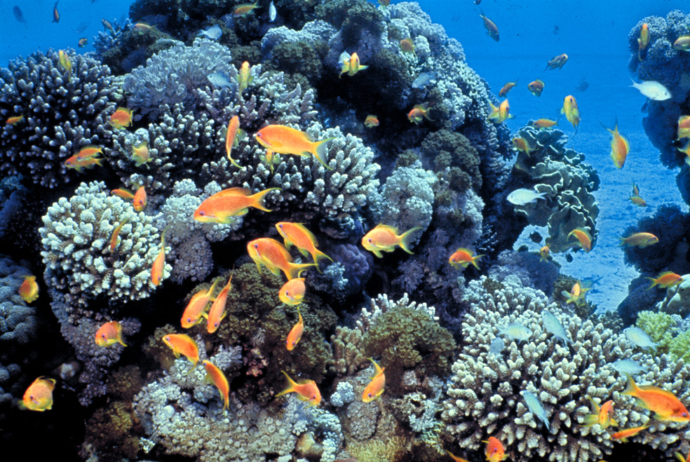
Aqabanlahden riutta alkaa muutaman metrin päästä rannasta.
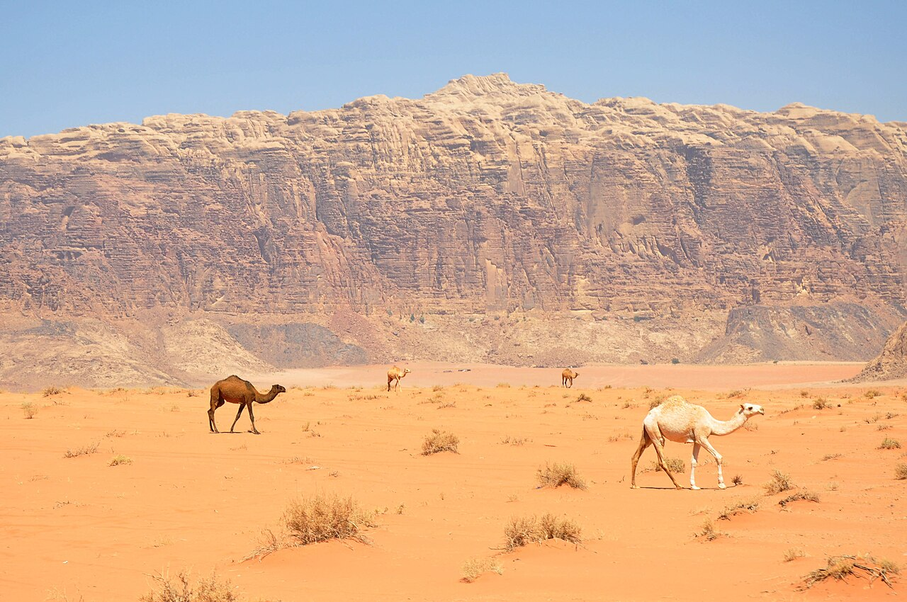
Takana jäi tämä.
Yö: AqabaAjoa: 1 hSukellus: n. 55–70 JOD / 2 tankkia
Vaihda tai lisää
Eläin- ja trekkivalikko
Koska kamelit, hevoset ja jalkaisin kulkeminen ovat se juttu — tässä paras tarjonta, josta voi vaihtaa yllä olevaan tai venyttää reissua pidemmäksi.
Kokemus
Kesto
Miksi
Kamelikaravaani, 2 päivää Wadi Rum
2 pv
Oikea juttu. Kamelilla syvälle aavikolle, yö nuotiolla, ei jeeppejä lähelläkään. Vaatii yhden lisäyön.
Jordan Trail: Dana → Petra
4–5 pv
Lähi-idän hienoin vaellus. Muulit kantavat kamppeet, beduiinikokki mukana, päätepysäkki on Petra takaovesta. Korvaisi puolet reissusta.
Wadi Ghuweir -kanjoni Dana
1 pv
18 km vettä, palmuja ja kapeikkoja, käytännössä tyhjä. Vaatii oppaan ja autologistiikan.
Wadi Ibn Hammad Karakin lähellä
½ pv
Lämminvetinen kanjoni vesiputouksineen. Nolla turisteja, ei pääsymaksua.
Hevosvaellus Little Petran ympäristö
½ pv
Vuoristoa ja kalliohautoja ilman polkuja. Kysy Little Petran majoituksista — tarjonta vaihtelee vuodesta toiseen.
Jebel Rumin huippu Wadi Rum
1 pv
Aitoa beduiinikiipeilyä kylän yläpuoliselle massiiville. Vaatii pään kestävän korkeutta.
Hammamat Afra Tafilehin lähellä
2 h
Paikallinen, ei-turistinen vaihtoehto Ma'inille. Osuu Karak–Dana-välille.
Kuumailmapallo Wadi Rum
auringonnousu
n. 130 JOD. Kaudella loka–huhti, sään mukaan.
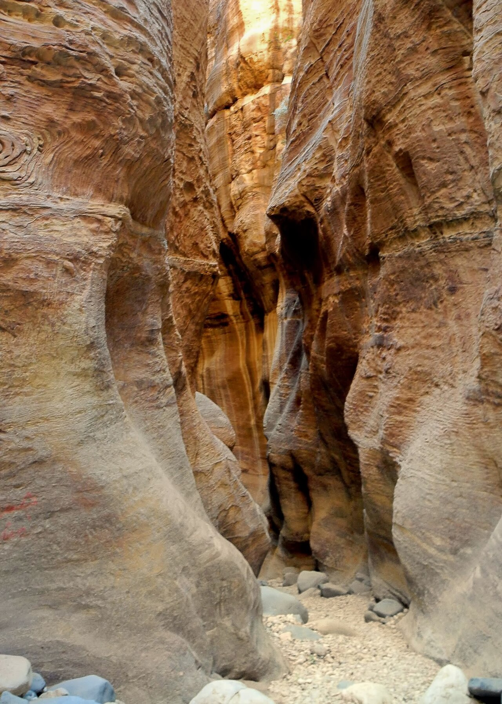
Wadi Ghuweir
Kanjonin kapeikko matkalla Feynaniin. Yksi Jordanian hienoimmista kanjoneista, ja tyhjä.
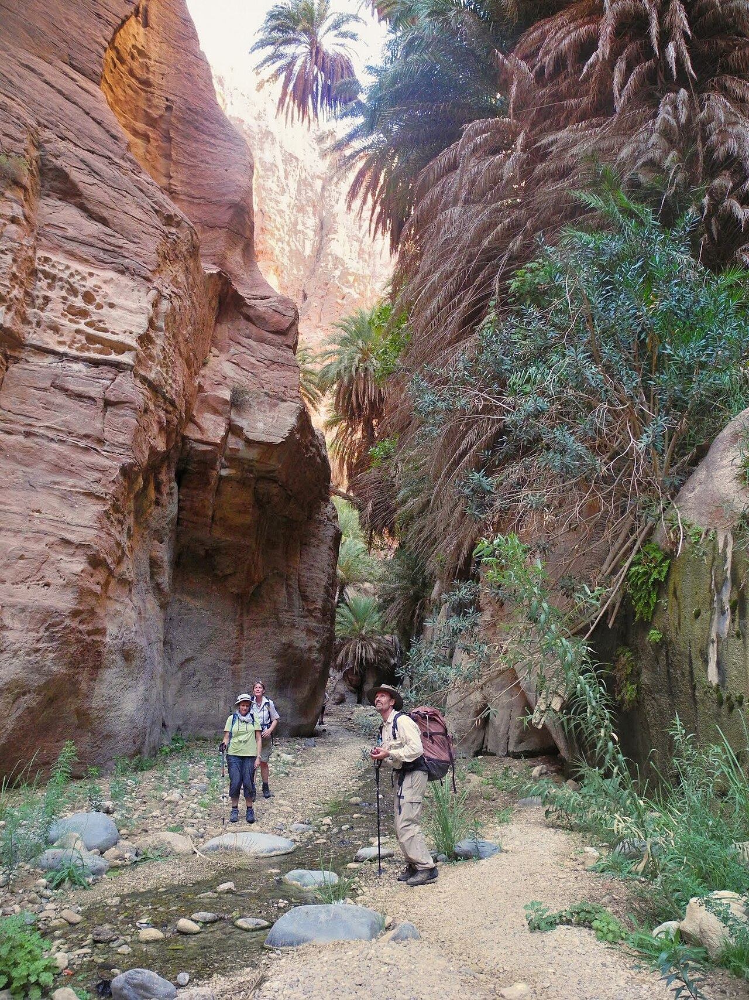
Palmut kanjonissa
Sama reitti alempana. Vettä riittää ympäri vuoden, siksi kasvillisuus on tällaista.
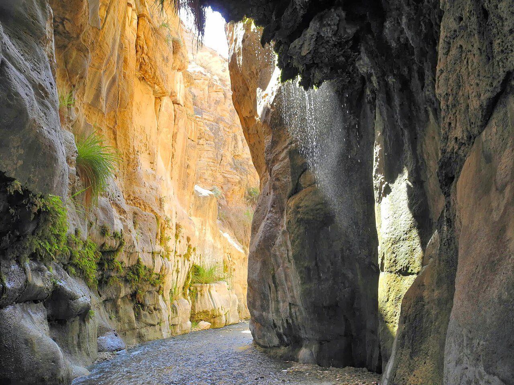
Wadi Ibn Hammad
Lämmintä vettä valuu suoraan seinistä. Puolen päivän juttu, jonka löytää harva.
Käytännön asiat
Mitä pitää tietää etukäteen
Jordan Pass — osta ennen lentoa
jordanpass.jo. Explorer-taso (n. 75 JOD) sisältää viisumimaksun ja Petran kahdelle päivälle. Edellyttää vähintään kolmea yötä maassa. Ei kata Mujibia eikä Feynania. Tarkista voimassa olevat hinnat ja tasot sivustolta.
Auto ja ajaminen
Tavallinen 2WD riittää kaikkeen — Wadi Rumin sisällä ajaa beduiini omalla autollaan. Vuokraa Ammanista ja palauta Ammaniin; yksisuuntainen Aqabaan maksaa n. 30–50 JOD lisää.
Älä aja pimeällä. Tiet ovat valaisemattomia, hidastetöyssyt merkitsemättömiä ja kameleita liikkuu vapaana. Poliisin checkpointit ovat ystävällisiä — passit käden ulottuvilla.
Varaa nämä ajoissa
Feynan Ecolodge ja Mujib Chalets ovat pieniä ja täyttyvät kaudella — 2–3 kk etuajassa.
Wadi Rumin leiri: valitse pieni beduiinivetoinen, ei "luxury dome resort" -tyyppistä. Tarkista tuoreet arviot ja hoida varaus suoraan WhatsAppilla — se on siellä normaali tapa, ei epäilyttävää.
Rahat ja juomat
Valuutta JOD, n. 1,25 €. Beduiinioppaat, leirit, tipit ja pienet kanjonimaksut menevät käteisellä — nosta kaupungeissa, aavikolla ei ole automaatteja.
Alkoholi: duty free saapuessa (tarkista voimassa oleva tuontiraja). Feynan on alkoholiton eikä sinne saa tuoda. Wadi Rumin leireissä oma pullo on yleensä ok — kysy etukäteen.
Mitä mukaan
Kanjoneihin: vanhat lenkkarit jotka saavat kastua (ei sandaaleja), vesitiivis puhelinpussi, nopeasti kuivuva paita. Trekille: 3 l vettä per henki, aurinkohattu, kepit jos polvet ovat mitä ovat.
Aavikolle: otsalamppu ja lämmin takki — lokakuun yö Wadi Rumissa menee kymmenen asteen alapuolelle.
Tasapaino, jos haluat rauhallisemman
Tämä runko on n. 55 % seikkailua. Jos haluat siirtää vaakaa lepoon: pudota päivän 5 takaovitrekki lyhyempään Petra-päivään ja lisää toinen yö Aqabaan. Silloin osuus on noin puolet ja puolet.
Karkea arvio
Budjetti per henkilö
Oletus: 4–6 hengen porukka, auto ja polttoaine jaettuna, keskitason majoitus. Lennot eivät sisälly.
Erä
€ / hlö
Sisältää
Jordan Pass
~95
Viisumimaksu + Petra 2 pv + muut kohteet
Auto + polttoaine
~130
8 päivää jaettuna, Amman–Aqaba–Amman
Majoitukset
~380
7 yötä, sisältää Feynanin ja leirien ruoat
Ruoka ja juoma
~180
Ravintolat, kaupat, teet, shisha
Aktiviteetit
~230
Mujib, beduiinioppaat, jeeppipäivä, kamelit, 2 sukellusta, Petra by Night
Yhteensä maassa
~1 000–1 150
+ lennot Helsingistä n. 350–600 €
Ennen lähtöä
Varauslista
Lennot Ammaniin — mieluiten loka- tai marraskuu. Tarkista että laskeutuminen ei ole liian myöhään ensimmäisenä iltana.
Jordan Pass verkosta ennen lentoa. Ilman sitä maksat viisumin erikseen kentällä.
Feynan Ecolodge — 2–3 kk etuajassa. Kysy samalla auton siirto Danasta.
Mujib Chalets — pieni paikka, varaa heti kun päivämäärät ovat lukossa.